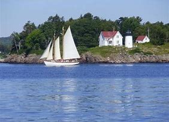
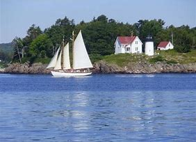

Atlantic Trails Resort
Activites at Atlantic Trials
 

Hiking
Atlantic Trails Resort has 5 miles of hiking trails and is adjacent to a state park. Go at it alone or join one of our guided hikes.
Kayaking
Ocean kayaks are available for guest use.
Bird Watching
While anytime is a good time for bird watching at Atlantic Trails, we offer guided birdwatching trips at sunrise several times a week.
Copyright © 2018 Atlantic Trails Resort
sherzah@tahir.com
sherzah@tahir.com